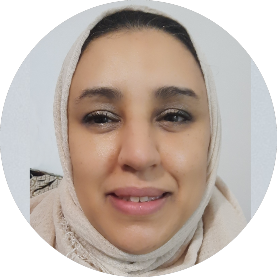
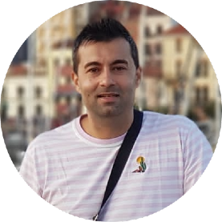
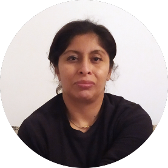

Veure el video
×
Asnea Zighlal
Hicham Bizarran entrevista la seva mare Asmea Zoghlal de 45 anys, va venir des de Meknes al Marroc per motius laborals.

Veure el video
×
Georgian Ivan
Alejandro Ivan entrevista el seu pare Laurentiun Georgian Ivan de 37 anys procedent de Buzau (Rumania), va migrar a Madrid l'any 1997 amb 13 anys buscant un lloc on estudiar per guanyar-se un futur millor.

Veure el video
×
Mayori Ramon
Jilmar Díaz entrevista la seva mare Mayori Ramon de 40 anys, va venir de l'Equador per motius laborals i per tenir un futur millor.